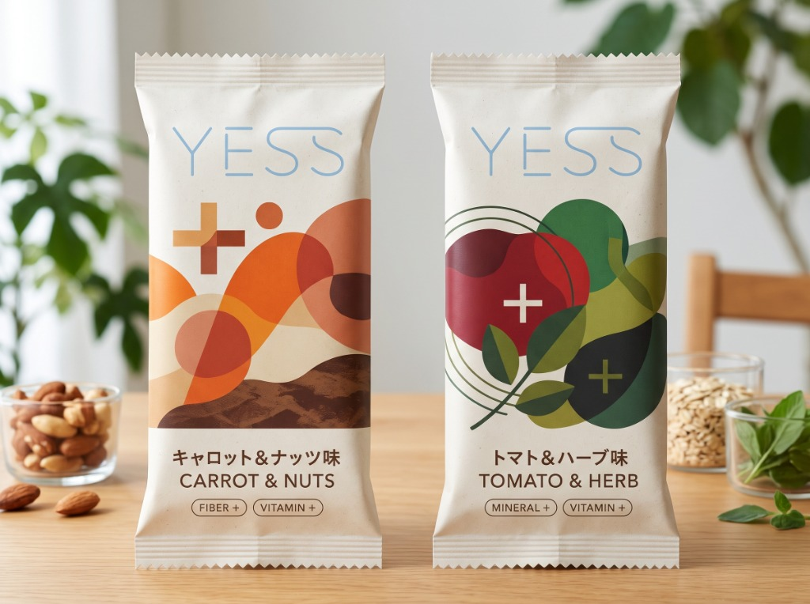

試作品の先行テイスティング
開発中の試作品をいち早くお試しいただくモニターにご案内します。食感や味、作業中の食べやすさについて率直な感想をお聞かせください。
キーボードを汚さない、ひとくちサイズの野菜スナック「YESS」。
パソコン作業中のリアルな声を取り入れて本当に欲しいものに近づけるため、LINEオープンチャット「YESS 開発共創ラボ」をはじめました。

専門知識はいりません。ひとことのつぶやきや、ボタンひとつの投票だけでも立派な参加です。
「キーボードが油まみれ事件」「夕方4時の集中切れ」など、作業中のリアルな日常を気軽につぶやいてください。それがそのまま開発のヒントになります。
「次の試作はどっちの味？」「パッケージはどっちが使いやすい？」など、ワンタップの投票で商品の方向性を一緒に決めていきます。
試作品を実際に試した感想を、忖度なしで教えてください。「ここがイマイチ」というダメ出しほど、私たちにとって貴重です。
※ やり取りはイメージです
開発中の試作品をいち早くお試しいただくモニターにご案内します。食感や味、作業中の食べやすさについて率直な感想をお聞かせください。
どの味を優先して商品化するか、パッケージの形やサイズはどうするか。LINEの投票機能で、商品の方向性を一緒に決めていきます。
原材料選びの試行錯誤や、うまくいかなかった試作、パッケージの検討過程など、ふだんは見られない開発のリアルをお届けします。